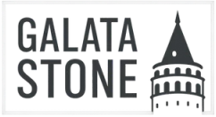
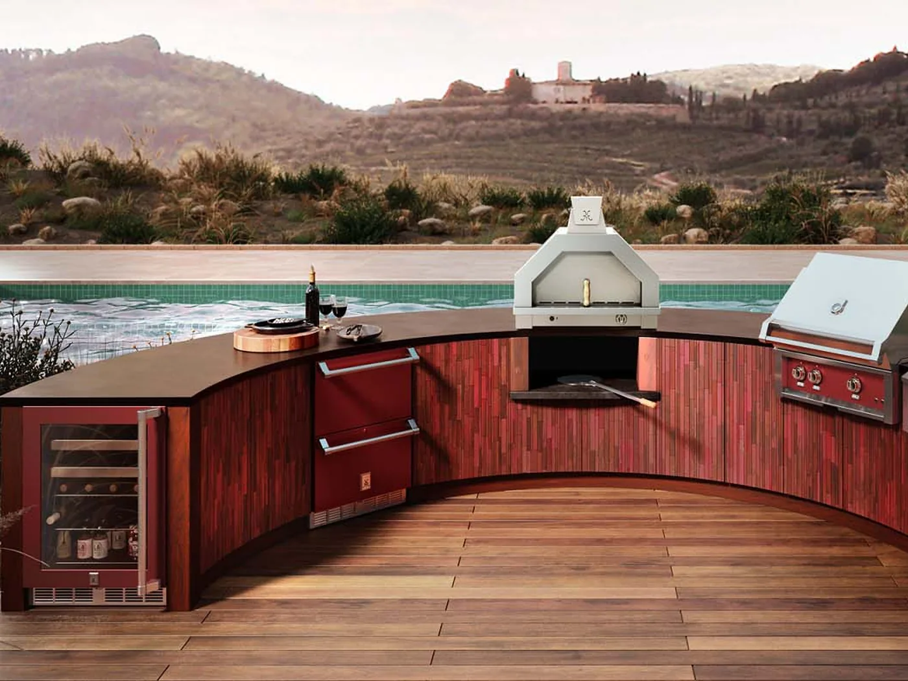
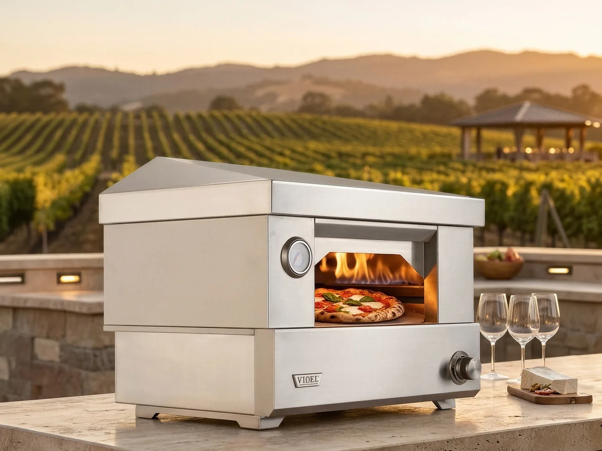

Videl gas pizza ovens for backyards and outdoor kitchens — specified with you, on display at our Huntington Beach showroom, and delivered across Southern California.
One decision covers most of the ground: whether the oven is built in or sits on a counter. Clearances, venting and where the oven can go all follow from it. Our pizza ovens sit within the Videl outdoor cooking line we carry.
Ovens that drop into an island or enclosure and read as part of the outdoor kitchen run.
See Built-In Ovens →Ready-to-use ovens that sit on a counter or stand — no construction, no trenching, and they come with you.
Browse Countertop Ovens →Both sizes run on either fuel, on the same supply that already feeds the grill.
See Gas Ovens →A stone floor for a properly cooked base, and a hood that lifts off for open-top grilling.
See What Is Included →Planned into the run from the start, so the opening, the clearances and the venting are designed in rather than cut in later.
See Outdoor Kitchens →The weight-bearing base, the surround and the venting a built-in oven needs, specified alongside it.
Plan an Enclosure →The stone, tile and finish that wrap the oven surround — selected in the same pass as the hardscape.
Browse Stone & Tile →Tell us where the oven would sit and how often you would realistically use it. We will tell you which size and installation make sense, including when the answer is the cheaper oven.
Request My Free Quote →BellaFina Outdoors is a design center for outdoor living in Huntington Beach. A pizza oven is rarely a standalone purchase — it sits in a kitchen run, against a veneer, under something, with a gas line nearby. Those details decide which oven fits.
Ovens, stone and tile, outdoor kitchens and shade structures sit under one roof in Huntington Beach — so the kitchen run can be planned together rather than ordered piece by piece from separate suppliers.
Compare size, build quality and working height in person — what a spec sheet cannot tell you: how deep the deck really is, how the door reads at counter height, and how much oven the run can carry.
The conversation starts with your space and how you cook, not with a product page. That often means a shorter list than you expected — the oven that suits the site and the way you actually use it.
Clearances, venting and how much weight the base has to carry, all taken from the manufacturer before the enclosure is poured — with one point of contact for the oven, the surround and the stone around it.
Some of the brands we work with




A grill is something the host disappears to. A pizza oven works the other way — it cooks fast enough that people stay beside it, stretch their own dough, watch a pizza go in and eat it standing up. That is most of the reason to buy one.
It also does something an indoor kitchen cannot. The floor temperature a dedicated oven reaches is what produces a cooked base and a leopard-spotted crust; a domestic oven does not get there. When the pizzas are finished, the retained heat is still good for bread, roasted vegetables, whole fish or a slow-cooked shoulder.
The oven that gets used every other week is the one that heats fast enough for a weeknight. Everything else is a party appliance.
A built-in oven drops into an island or enclosure and reads as part of the outdoor kitchen rather than an appliance parked beside it. It sits at a comfortable working height, and it runs off the same gas supply that feeds the grill — natural gas or propane, no wood to store and no second fuel to think about.
Gas is what makes a pizza oven a weeknight appliance instead of a weekend project. It comes up to temperature quickly, holds it without anyone tending a fire, and shuts off when you are done.

A countertop oven sits on a finished counter or a stand and needs nothing built around it. If the patio is already done, or you would rather not open up an island, this is the straightforward route — and it comes with you if you move.
It runs on the same natural gas or propane as a built-in model, so the cooking is no different. What changes is the installation: no base to pour, no opening to cut, no surround to finish.

Three steps, and the first one takes about five minutes of your time.
Fill in the short form with where the oven would go and how often you would use it. That is all we need to start. If photos of the patio would help, we will ask for them by text or email once we reply — nothing to upload here.
We match the oven to the gas supply and the space, then pull together the clearance, venting and base-strength figures your contractor needs. Going into a kitchen run, the surround and veneer are selected in the same pass as the rest of the stone and tile.
The oven arrives on your build schedule with the accessories that make it usable on day one — peel, brush, stone and cover. With the specifications settled up front, your contractor has what they need to keep moving.
Six concrete differences, all of them about the decisions that are expensive to get wrong.
We ask how often you will actually cook and where the oven has to sit. If the countertop model is the one you will use, we say so.
How far the oven must sit from anything that can burn, where the smoke goes and how much weight the base carries all come from the manufacturer's documents, not an estimate made on site.
Roofs, pergolas and tight property lines change what is practical. We work that out at design stage rather than after the surround is built.
Enclosure, veneer, coping and tile selected alongside the oven, so the finish matches the rest of the hardscape.
Size, build quality and working height are hard to judge from a photo. Displays are available for viewing in Huntington Beach.
Orange County, Los Angeles County and San Diego County, scheduled around your build calendar rather than ours.
Five questions decide which oven suits your backyard. Answer them before anything gets built and the rest is straightforward — we can walk you through all five in one conversation.
Both burn the same and reach the same temperatures, so the choice is about supply rather than cooking. If a gas line already feeds the grill, natural gas is the tidier answer — the oven ties into the run and you never think about it again. If there is no line, propane avoids trenching the patio, at the cost of swapping a tank. The oven is configured for one or the other when it is ordered, so it is worth deciding early.
Built-in drops into an island and becomes part of the run — it looks integrated and sits at a comfortable working height, but it needs its opening, clearances and gas line designed in from the start. A countertop oven sits on a finished counter or a stand, needs no construction, and moves with you. If the kitchen is being built anyway, go built-in; if the patio is already finished, countertop is far less disruptive.
Neapolitan-style pizza is generally cooked at very high floor temperatures, which is why a dedicated oven produces a result a domestic kitchen oven cannot. A gas oven reaches cooking temperature in roughly 15–20 minutes and holds it without tending, so pizza stays a weeknight option. Manufacturers publish figures for each model, and we can compare them against how you plan to cook.
Sometimes, but it is more involved than swapping a grill. A built-in oven needs a base strong enough to carry it, the manufacturer's safe distance from anything that can burn, somewhere for the exhaust to go, and a gas line run to it. Retrofitting into an existing island usually means opening up part of the run. Where that is impractical, a countertop model gets you cooking without the construction.
Every oven has a vent arrangement set by its manufacturer, and the exhaust has to leave safely — which is a live question when the oven sits under a solid roof, a pergola or a covered patio. Check the required clearance above and around the oven before the surround is built. Settle this at design stage; it is not a finish detail.
The range is broad. A countertop gas oven is a single purchase. A built-in oven set into an enclosure adds the base, the veneer, the venting, the gas work and the labor, and lands considerably higher. Tell us whether you are leaning built-in or countertop and where it would sit, and we can give you a realistic figure to plan against.
From the Huntington Beach showroom we supply and support built-in and countertop gas pizza ovens throughout Orange County — for homeowners building one backyard and for contractors building many.
Building elsewhere in Orange County, or just over the line in Los Angeles, Riverside or San Diego county? Ask us — we ship and deliver beyond this list.
Oven size, build quality, working height and how a surround finish actually looks are hard to judge from a product photo. Displays are available for viewing at our Huntington Beach location, so you can compare models in person and talk them through with our team.
We work with landscape contractors, builders and designers across Southern California. The useful part is usually not the pricing — it is having the clearance, flue and base-loading numbers in hand before the island is built.
A countertop oven on a finished patio, or a built-in oven in a new kitchen run — send us the space and we will work out which one suits it.
Or call (714) 699-9269. We typically respond within one business day.
Tell us where the oven is going and how you like to cook. Our team will follow up with options and pricing, usually within one business day.